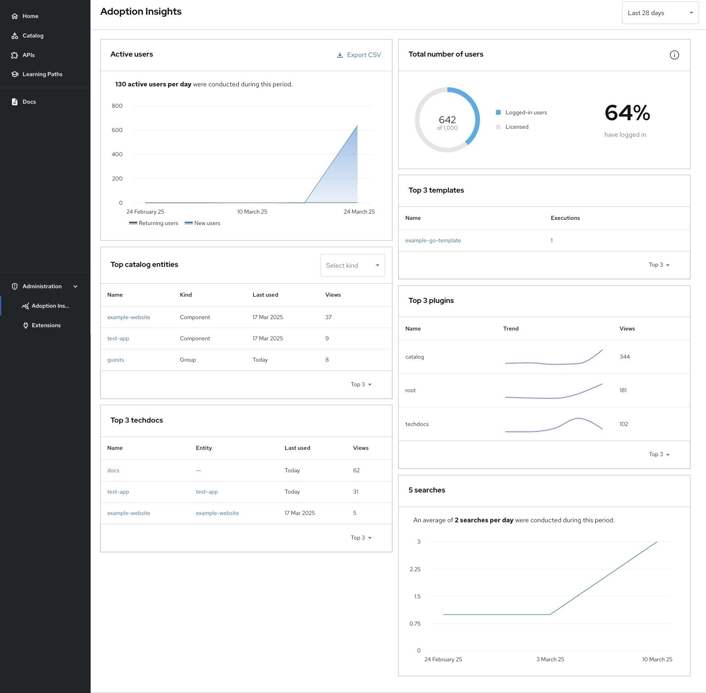
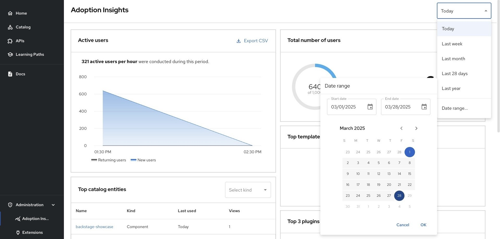
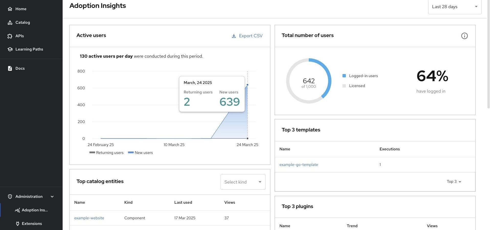
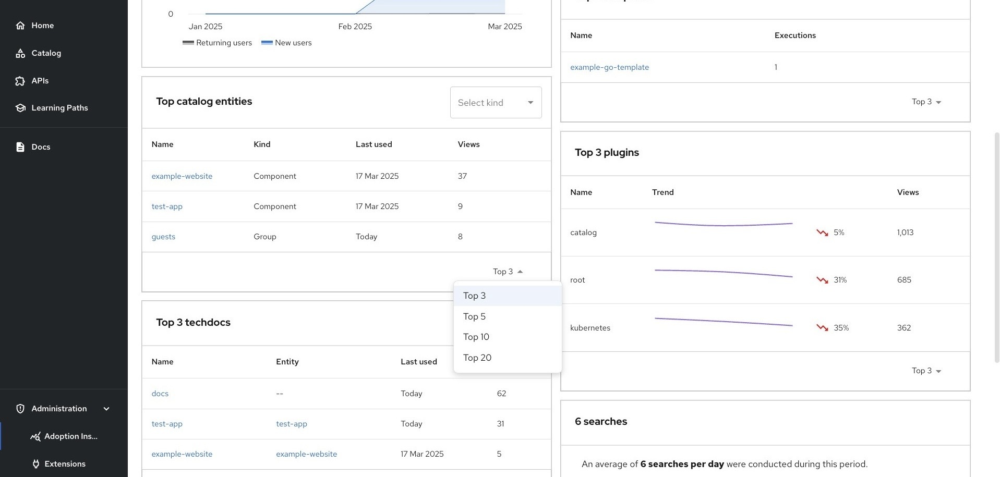

Adoption Insights in Red Hat Developer Hub
Delivering detailed analytics on adoption and engagement within your internal developer portal
Abstract
- 1. Adoption Insights overview
- 2. Enable the Adoption Insights plugin
- 3. Disable the Adoption Insights plugin
- 4. Customize the Adoption Insights plugin in Red Hat Developer Hub
- 5. Use Adoption Insights in Red Hat Developer Hub
- 6. View the Adoption Insights card
- 7. Change the number of displayed records
- 8. Filter records to display specific catalog entities in Top catalog entities
- 9. View searches
As a platform engineer, you can configure Adoption Insights in Red Hat Developer Hub (RHDH) to visualize key metrics and trends to get information about the usage of RHDH in your organization.
1. Adoption Insights overview
The Red Hat Developer Hub instance includes the Adoption Insights plugin preinstalled and enabled by default.
As organizations generate an increasing number of data events, there is a growing need for detailed insights into the adoption and engagement metrics of the internal developer portal. These insights help platform engineers make data-driven decisions to improve performance and usability, and convert them into actionable insights.
You can use Adoption Insights in Red Hat Developer Hub to visualize key metrics and trends to get information about the usage of Developer Hub in your organization. The information provided by Adoption Insights in Developer Hub helps you pinpoint areas of improvement, highlights popular features, and evaluates progress toward adoption goals. You can also monitor user growth against licensed users and identify trends over time.
The Adoption Insights dashboard in Developer Hub includes the following cards:
- Active users
- Total number of users
- Top catalog entities
- Top 3 templates
- Top 3 techdocs
- Top 3 plugins
- Portal searches

2. Enable the Adoption Insights plugin
Adoption Insights is enabled by default on Developer Hub instances. If you are migrating from a Developer Preview or you have installed Adoption Insights manually before, update your configuration.
Developer Preview features are not supported by Red Hat in any way and are not functionally complete or production-ready. Do not use Developer Preview features for production or business-critical workloads. Developer Preview features provide early access to functionality in advance of possible inclusion in a Red Hat product offering. Customers can use these features to test functionality and provide feedback during the development process. Developer Preview features might not have any documentation, are subject to change or removal at any time, and have received limited testing. Red Hat might provide ways to submit feedback on Developer Preview features without an associated SLA.
For more information about the support scope of Red Hat Developer Preview features, see Developer Preview Support Scope.
Procedure
- Remove legacy plugins, because Adoption Insights is now built-in. Delete the following references from your dynamic-plugins.yaml file:
-
red-hat-developer-hub-backstage-plugin-adoption-insights -
red-hat-developer-hub-backstage-plugin-adoption-insights-backend -
red-hat-developer-hub-backstage-plugin-analytics-module-adoption-insights Enable the
backstage-community-plugin-analytics-provider-segmentplugin by settingdisabledtofalse:plugins: - package: ./dynamic-plugins/dist/backstage-community-plugin-analytics-provider-segment disabled: false
3. Disable the Adoption Insights plugin
Disable the Adoption Insights plugin by updating the dynamic plugins configuration file.
Procedure
In your
dynamic-plugins.yamlfile, update thepackage.disabledvalue of the plugin totrue:plugins: - package: ./dynamic-plugins/dist/backstage-community-plugin-analytics-provider-segment disabled: true
4. Customize the Adoption Insights plugin in Red Hat Developer Hub
Customize buffer size, flush interval, debug settings, licensed users, and RBAC permissions for the Adoption Insights plugin.
Procedure
To customize
maxBufferSize,flushInterval,debug, andlicensedUsersin the Adoption Insights plugin, in your Red Hat Developer Hubapp-config.yamlfile, update the relevant settings as shown in the following code:app: analytics: adoptionInsights: maxBufferSize: _<maximum_buffer_size>_ flushInterval: _<flush_interval>_ debug: _<debug_value>_ licensedUsers: _<licensed_users>_maxBufferSize-
(Optional) Enter the maximum buffer size for event batching. The default value is
20. flushInterval-
(Optional) Enter the flush interval in milliseconds for event batching. The default value is
5000ms. debug-
(Optional) Enter
trueto enable debug logging for the Adoption Insights plugin, orfalseto disable it. The default value isfalse. licensedUsers-
(Optional) Enter the maximum number of licensed users who can access the RHDH instance. The default value is
100.
Optional: Configure the required RBAC permission for the users who are not administrators, as shown in the following example:
p, role:default/_<your_team>_, adoption-insights.events.read, read, allow g, user:default/_<your_user>_, role:default/_<your_team>_
5. Use Adoption Insights in Red Hat Developer Hub
Access the Adoption Insights dashboard through the Administration menu to view usage metrics and analytics.
Procedure
- In the Developer Hub application, on the navigation menu, click Administration → Adoption Insights.
5.1. Set the duration of data metrics
Set the time range for viewing metrics data, including today, last week, last month, last 28 days, last year, or a custom date range.
You can set the data metrics duration by using any of the following time ranges:
- Today
- Last week
- Last month
- Last 28 days (default)
- Last year
- Date range…
Procedure
- On the top of the screen, click the dropdown list to display the choices.
Select the duration choice for which you want to see the data metrics.

6. View the Adoption Insights card
View detailed analytics through individual dashboard cards including active users, total users, and top catalog entities.
Procedure
- Navigate to Administration → Adoption Insights to access the dashboard cards.
6.1. View the active users
View the total number of active users over time, including returning and new users, and export the data in CSV format.
The Active users card displays the total number of active users over a specified date and time period. You can export the user data in a CSV format.

- Returning users
- Existing users who have logged into Developer Hub before
- New users
- New users who have registered and logged into Developer Hub for the first time
Procedure
- To view the list of active users in your Red Hat Developer Hub instance, go to Administration → Adoption Insights, and see the Active users card.
- To view the exact number of users for a particular day, hover over the corresponding date in the Active users card.
- To export the user data in CSV format, click the Export CSV link.
6.2. View the total number of users
View the total number of licensed users, and compare logged-in users versus licensed users in numeric and percentage format.
This card displays the total number of users who have license to use Red Hat Developer Hub. It also provides a comparison of the number of Logged-in users and Licensed users in numeric and percentage form.
- Logged-in users
- Total number of users, including licensed and unlicensed users, currently logged in to Developer Hub.
- Licensed users
-
Total number of licensed users logged in to Developer Hub. You can set the target for the number of licensed users in your Developer Hub
app-config.yamlfile.
Procedure
- To view the total number of users in your Developer Hub instance in numeric and percentage forms, go to Administration → Adoption Insights and see the Total number of users card.
- To view a percentage representation of the total number of logged-in users among the total number of licensed users, hover over the tooltip in the Total number of users card.
6.3. View the top catalog entities
View the most-viewed catalog entities including name, type, last used date, and total views in the Top catalog entities card.
This card lists the most-viewed catalog entities (such as components, APIs, and so on) and documentation entries, including usage statistics, in a table.
Each item displays the following details:
- Name
- Name of the catalog
- Kind
- Type of the catalog
- Last used
- The last time a user accessed the catalog entity
- Views
- The number of times users viewed the catalog entity
Procedure
- To view the most commonly used catalog entities in your Developer Hub instance, go to Administration → Adoption Insights and see the Top catalog entities card.
- To know more about the displayed catalog entity, hover over the catalog entity name.
6.4. View the top 3 templates
View the most commonly used templates including name, most frequent user type, and total executions in the Top 3 templates card.
This card lists the three most commonly used templates in a table. You can click the down arrow next to 3 rows to view the full list of the commonly used templates.
- Name
- Name of the template
- Mostly in use by
- Type of user who uses this template most often
- Executions
- Number of times users ran this template
Procedure
- To view the most commonly used templates in your Developer Hub instance, go to Administration → Adoption Insights and see the Top 3 templates card.
- To know more about the displayed template, hover over the template name.
6.5. View the top 3 TechDocs documents
View the most-viewed TechDocs documentation entries including name, entity type, last used date, and total views.
This card lists the most-viewed documentation entries, including the total views, in a table.
- Name
- Title of the document
- Entity
- Type of document
- Last used
- The last time a user viewed the document
- Views
- Number of times users visited the document
Procedure
- To view the most commonly used templates in your Developer Hub instance, go to Administration → Adoption Insights and see the Top 3 techdocs card.
- To learn more about the documents, hover over each name.
6.6. View the top 3 plugins
View the most commonly used plugins, including name, popularity trend, and total views in the Top 3 plugins card.
This card lists the three most commonly used plugins in a table. You can click the down arrow next to 3 rows to view the full list of the commonly used plugins.
- Name
- Name of the plugin
- Trend
- Popularity of the plugin as a graph
- Views
- Number of times users viewed this plugin
Procedure
- To view the most commonly used plugins and the plugin page visit trends in your Developer Hub instance, go to Administration → Adoption Insights and see the Top 3 plugins card.
- To know more about the displayed plugin, hover over the plugin name.
7. Change the number of displayed records
Change the number of displayed records from top 3 to top 5, 10, or 20 for catalog entities, templates, TechDocs, and plugins cards.
You can change the number of displayed records in Adoption Insights for the following cards:
- Top catalog entities
- Top 3 templates
- Top 3 techdocs
- Top 3 plugins
You can select any of the following number of records for display:
- Top 3
- Top 5
- Top 10
- Top 20
By default, the top three most-viewed catalog entities are displayed.
Procedure
Go to Administration → Adoption Insights and click the Down arrow next to 3 rows to change the number of displayed records.

8. Filter records to display specific catalog entities in Top catalog entities
By default, the Top catalog entities card displays all of the items in your Developer Hub instance. Filter the Top catalog entities card to display specific entity types.
Procedure
- To view a specific catalog entity in the table, go to Administration → Adoption Insights, click the drop-down list on the Top catalog entities card, and select the item that you want to view.
9. View searches
View portal search trends over time, including total searches and average searches per time period in the Searches card.
In the Searches card, you can view the following data:
- Visualizes the number of portal searches and trends over time as a graph
- Displays the total for the period in the card title
- Clarifies the average number each hour/day/week/month depending on the time period chosen
Procedure
- Go to Administration → Adoption Insights to view the Searches card.